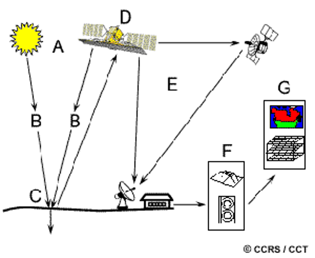
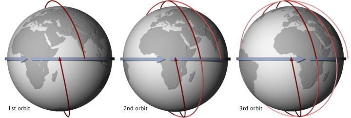
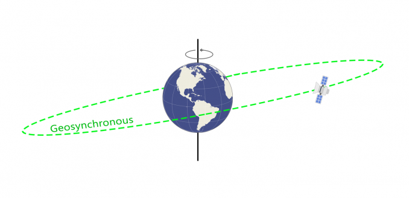
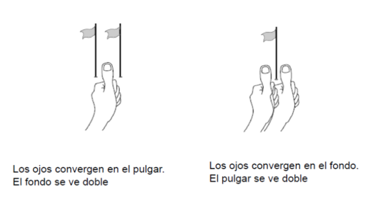
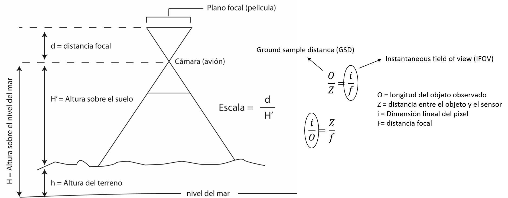
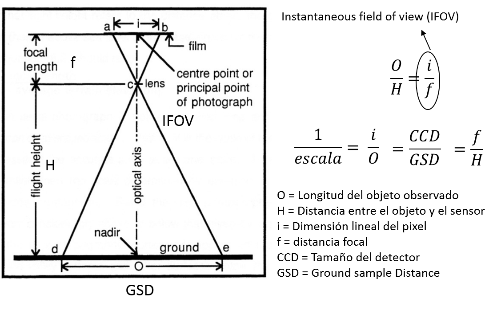
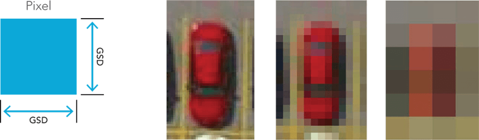
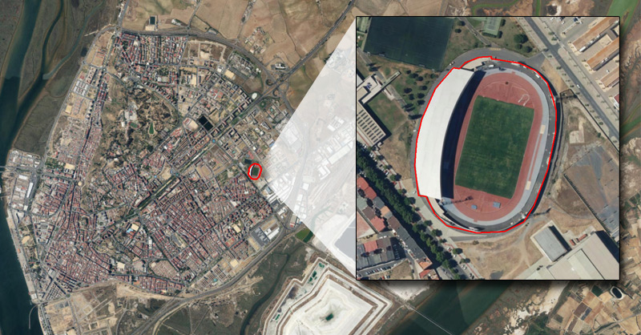
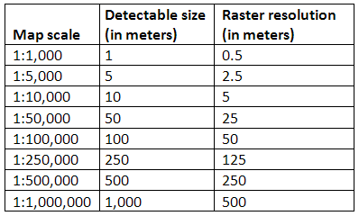
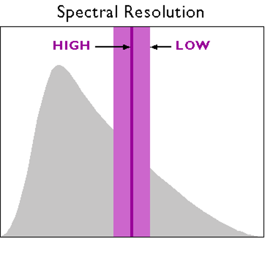

ANÁLISIS GEOESPACIAL
Intro a Sensores Remotos & SIG
Prof. Edier Aristizábal

Definición
Los Sensores Remotos (teledetección) es el arte, ciencia y tecnología de observar un objeto, escena o fenómeno por técnicas basadas en instrumentos. El término remoto se refiere a la observación realizada a una distancia sin contacto físico con el objeto de interés. La energía puede ser radiaciones electromagnética, campos de fuerza o energía acústica.
Radiación electromagnética

Interacción con la atmósfera & Objeto
Plataformas & Sensores
Polares & Heliosincrónicas
Geosincrónica & Geoestacionaria


Fotogrametría
Paralaje
Resolución
Escala
Resolución espacial
El procesamiento de imágenes está interesado no solamente en la Detección: discernir discretamente los objetos, sino también en Reconocer: determinar que tipo de objeto es, y en la Identificación: identificar el objeto específicamente.
Área Mínima Cartografiable
Regla de Waldo Tobler (1967) --> The rule is: divide the denominator of the map scale by 1,000 toget the detectable size in meters. The resolution is one half of this amount.
Map Scale = Raster resolution (in meters) * 2 * 1000
Resolución espectral
Sensores de Antena
LIDAR
CRS
Projections
The Earth
Geoide
Elipsoide
Proyección a Coordenadas Planas
Universal Transversal Mercator (UTM)
This projection preserves angles and slightly distorts area